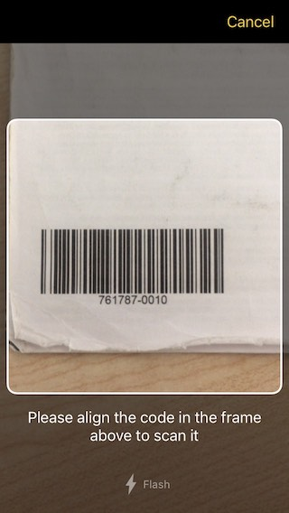
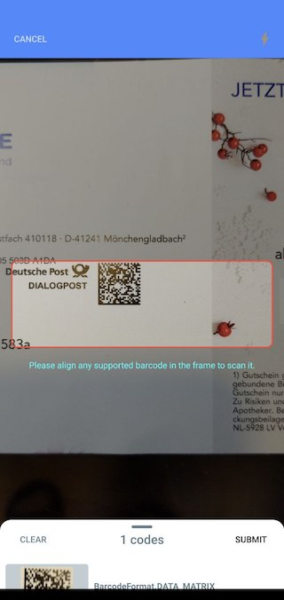

Scanbot Barcode Scanner SDK for Flutter
Introduction
The Scanbot Barcode Scanner SDK brings barcode scanning capabilities to your mobile apps.
The Flutter plugin barcode_scanner provides the implementation
of the native Scanbot Barcode Scanner SDK for Android and iOS.
The following functionality is covered by this Flutter plugin:
- Scanning of 1D and 2D barcodes via ready-to-use scanner UI
- Recognition of 1D and 2D barcodes on still images (e.g. JPG files)
- Support for multiple barcode scanning and recognition
Supported Barcode Types
1D Barcodes
- Code 39
- Code 93
- Code 128
- Codabar
- UPC-A
- UPC-E
- EAN-8
- EAN-13
- ITF (Interleaved 2 of 5)
2D Barcodes
- QR-Code
- Aztec
- PDF-417
- Data Matrix
💡 You might also be interested in an overview found in our blog post Types of barcodes.
Requirements
Dev Tools
- Latest Flutter SDK
- For Android apps: Android SDK (API Level 21+), Platforms and Developer Tools
- For iOS apps: Mac OS with latest Xcode and Command Line Tools
Mobile Platforms
- Android 5.0 (API Level 21) and higher
- iOS 9 and higher
Please note:
- This Plugin and the Scanbot Barcode Scanner SDK are available only for Android and iOS
- We do not support rooted Android devices (custom ROMs)
- This Plugin does not work on other platforms like Windows Phone, Desktop or Web Apps
- Also, the Plugin does not work in a Flutter Hummingbird and macOS versions
Mobile Devices
- Smartphones and Tablets with a rear-facing camera with autofocus
- Supported CPUs and Architectures:
- Android:
armeabi-v7, arm64-v8a, x86, x86_64 - iOS:
arm64, armv7, x86_64, i386
- Android:
No Internet Connection Required
The Scanbot Barcode Scanner SDK works completely offline. It does not even contain any networking code. This can easily be verified by routing all networking traffic coming from the app through a proxy. All data generated by the Scanbot Barcode Scanner SDK is only stored on the end user’s device and in absolutely no case ever transferred to a server / cloud service controlled by us. You as the customer will need to take care of uploading the scans / data to your backend, if desired.
Simulators / Emulators
While it is possible to test your App with the Scanbot Barcode Scanner SDK Plugin on simulators/emulators, we strongly recommend you use real Android/iOS devices. Depending on the emulated Camera you may not be able to test/evaluate the full functionality of the Scanbot Barcode Scanner SDK Plugin.
Example Apps
Check out our example apps on GitHub:
- Flutter example app: https://github.com/doo/scanbot-barcode-scanner-sdk-example-flutter
Installation
The Scanbot Barcode Scanner SDK Flutter Plugin is available as a Flutter Dart package barcode_scanner on pub.dev. You can simply add it as a dependency to your app.
Add the barcode_scanner plugin to your pubspec.yaml file as dependencies:
dependencies:
barcode_scanner: ^1.0.0 # use the latest plugin version
Use the Flutter CLI (or your IDE) to fetch and install the packages:
$ flutter pub get
Android
In the top-level android/build.gradle file:
-
Update Kotlin version to at least
1.3.61or higher. Typically defined viaext.kotlin_versionvariable:... buildscript { ext.kotlin_version = '1.3.61' ... }
In the app-level android/app/build.gradle file:
-
Add the following
packagingOptionsandroid { ... packagingOptions { pickFirst 'META-INF/atomicfu.kotlin_module' pickFirst 'META-INF/proguard/coroutines.pro' exclude 'META-INF/LICENSE.txt' exclude 'META-INF/NOTICE.txt' exclude 'META-INF/LICENSE' exclude 'META-INF/NOTICE' } } -
Enable multidex:
android { defaultConfig { ... multiDexEnabled true } }
In the android/app/src/main/AndroidManifest.xml file:
- Add the
CAMERApermission:<uses-permission android:name="android.permission.CAMERA" />
iOS
For iOS you need to adjust the Podfile and install or update the Pods:
Make sure you have specified a global platform version in the ios/Podfile file, like:
platform :ios, '9.0'
Then run:
$ cd ios/
$ pod install
In your Info.plist file add the required NSCameraUsageDescription property:
NSCameraUsageDescription - “Privacy - Camera Usage Description”. Describe why your app wants to access the camera.
Please note that without this property the app will crash on camera access!
API Reference
ScanbotBarcodeSdk- .initScanbotSdk(config) -
function - .startBarcodeScanner(config) -
function - .detectFromImageFile(file, barcodeFormats, enableHighSensitivityMode) -
function - .getLicenseStatus() -
function - .cleanupBarcodeStorage() -
function
- .initScanbotSdk(config) -
Getting Started
Initialize SDK
ScanbotBarcodeSdk.initScanbotSdk(ScanbotSdkConfig config)
The Scanbot Barcode Scanner SDK must be initialized before usage. Make sure to call the initialization after entering the main widget creation.
The following configuration options can be passed on initialization:
Options:
var config = ScanbotSdkConfig(
licenseKey: "<YOUR_SCANBOT_SDK_LICENSE_KEY>",
loggingEnabled: true,
storageBaseDirectory: "file:///some/optional/custom-storage-dir/",
);
ScanbotBarcodeSdk.initScanbotSdk(config);
licenseKey: Your license key for the Scanbot Barcode Scanner SDK.loggingEnabled: Optional logging flag.storageBaseDirectory: Optional directory as file URI to override the default storage directory of the Scanbot Barcode Scanner SDK.
Example code for initialization:
class MyApp extends StatefulWidget {
@override
_MyAppState createState() {
// Please note: this is just an example license key string (it is not a valid license)
String licenseKey =
"fXbN2PmyqEAZ+btdkSIS36TuX2j/EE5qxVNcZMXYErbLQ" +
"3OBnE10aOQxYI8L4UKwHiZ63jthvoFwUevttctBk0wVJ7Z" +
"+Psz3/Ry8w7pXvfpB1o+JrnzGGcfwBnRi/5raQ2THDeokR" +
"RB1keky2VBOFYbCfYt3Hqms5txF2z70PE/SBTMTIVuxL7q" +
"1xcHDHclbEBriDtrHw8Pmhh9FqTg/r/4kRN/oEX37QGp+Y" +
"3ogwIBbSmV+Cv+VuwtI31uXY3/GkyN/pSJZspIl+exwQDv" +
"O0O1/R/oAURpfM4ydaWReRJtjW8+b1r9rUgPERguaXfcse" +
"HlnclItgDfBHzUUFJJU/g==\nU2NhbmJvdFNESwppby5zY" +
"2FuYm90LmRlbW8ueGFtYXJpbgoxNDg0NjExMTk5CjcxNjc" +
"KMw==\n";
var config = ScanbotSdkConfig(
licenseKey: licenseKey,
loggingEnabled: true
);
ScanbotBarcodeSdk.initScanbotSdk(config);
});
return _MyAppState();
}
}
License Key
In order to run the Scanbot Barcode Scanner SDK plugin functionality within your production app you have to purchase and use a valid Scanbot Barcode Scanner SDK license.
Each license key is valid only for a given app bundle identifier. The license also defines which modules you are allowed to use. The usage of unlicensed modules will log an error to the console and terminate the app. If your license has expired any calls of the Scanbot Barcode Scanner SDK plugin will terminate your app.
Trial License
The Scanbot Barcode Scanner SDK will run without a license for one minute per session! To get an unrestricted, “no-strings-attached” 30 day trial license, please submit the Trial License Form on our website.
Please kindly note that a trial license can only be used in a development and staging environment. You are not allowed to publish your app to the App Store, Play Store or any 3rd party Android App Store with a trial license.
Purchase a Production License
You can check and purchase the Scanbot Barcode Scanner SDK licenses here: https://scanbot.io/sdk.html.
App Identifier
Every app has a unique identifier (sometimes also known as “bundle identifier” or “application ID”). Your license will be bound to this identifier. To request a trial license or purchase a production license you have to provide us the bundle identifier of your app.
For Android: Please see the applicationId in the app-level build.gradle file of your android project:
defaultConfig {
...
applicationId "io.scanbot.barcode.example.app.flutter"
}
For iOS: In Xcode see the Bundle Identifier in the “General” settings tab of your project.
Logging
When initializing the Scanbot Barcode Scanner SDK you can enable logging of the SDK. By default logging is disabled.
var config = ScanbotSdkConfig(
loggingEnabled: true,
// ...
);
ScanbotBarcodeSdk.initScanbotSdk(config);
On Android logs are printed into LogCat as well as saved on the device.
The easiest way to check the log outputs on Android is to use the Android Debug Bridge (adb).
(e.g. $ adb -s <DEVICE_ID> shell "logcat")
On iOS all logs are printed to the console. Please use Xcode to check the log outputs. There will be no log files created by the Scanbot Barcode Scanner SDK plugin.
Please note: While it may be useful for development, consider switching logging OFF in production builds for security and performance reasons!
Updating License Key in Production Apps
To renew an expired license or extend a valid license with new Scanbot Barcode Scanner SDK features, you will have to update your app in the App Store or Play Store. The expiration date and the feature list of a license are contained in an encrypted data part of the license key string. This means a renewal or extension of a license will cause a new license key string to be generated.
License Check in Production Apps
If your Scanbot Barcode Scanner SDK license has expired, any call of the Scanbot Barcode Scanner SDK API will terminate your app or result in an error.
To prevent this you should always check for license expiration during the runtime by calling the method ScanbotBarcodeSdk.getLicenseStatus().
If the result of await returns result.isLicenseValid == false, you should disable any usage of the Scanbot Barcode Scanner SDK functions or UI components in your app.
We highly recommend implementing a suitable handling of this case in your app!
ScanbotBarcodeSdk.getLicenseStatus()
Use this function to check the current state of the license. The SDK must be initialized.
var result = await ScanbotBarcodeSdk.getLicenseStatus();
if (result.isLicenseValid) {
// Making your calls of the Scanbot Barcode Scanner SDK Plugin API is now safe.
// e.g. start the Document Scanner
} else {
// Implement a suitable handling (e.g. disable Scanbot functionality in your App)
showAlert("Scanbot Barcode Scanner SDK license has expired! Please install the latest app update.");
}
Result:
result.isLicenseValid: Contains a boolean status value of the license.truemeans the Scanbot Barcode Scanner SDK license is valid and all features can be used normally.falsemeans the license is not valid and any call of the Scanbot Barcode Scanner SDK API will not work or result in an error.result.status: AStatusenum that describes the status of the current license key.result.expirationDate- Optional expiration timestamp of the current license key if the license is valid.
License Status Types
Status.StatusOkay: OK, the license key is valid.Status.StatusTrial: No license key installed, trial mode is active.Status.StatusFailureNotSet: License error: No license installed.Status.StatusFailureCorrupted: License error: The license key string is corrupted. Please check the format.Status.StatusFailureWrongOS: License error: The license key does not include support for current Operating System (Android or iOS).Status.StatusFailureAppIDMismatch: License error: The license key does not match the Application ID (on Android) or Bundle ID (on iOS) of this app.Status.StatusFailureExpired: License error: License has expired.
Storage
By default the native Scanbot Barcode Scanner SDKs as well as the Plugin itself use the internal and secure storage locations for all snapped barcode image files.
-
On Android all files will be stored in the internal files directory of your application. No permissions are required for your app to read or write files in this directory.
-
On iOS all files will be stored in the Application Support folder of your application.
Customize Storage Location
It is strongly recommended to use the default storage location. However, you can override the storage directory on initialization of the Plugin.
The initializeSdk method can take an optional parameter storageBaseDirectory to set a custom storage location.
Directory storageDirectory;
if (Platform.isAndroid) {
storageDirectory = await getExternalStorageDirectory();
}
if (Platform.isIOS) {
storageDirectory = await getApplicationDocumentsDirectory();
}
// Please note: getExternalStorageDirectory() and getApplicationDocumentsDirectory()
// are provided via 3rd-party plugins like "path_provider".
var config = ScanbotSdkConfig(
storageBaseDirectory: "${directory.path}/my_custom_storage",
...
);
await ScanbotBarcodeSdk.initScanbotSdk(config);
The value of the storageBaseDirectory must be a file URL ('file:///...) pointing to a valid platform-specific file system path.
If this directory does not exist yet, the Plugin will try to create it.
To work with the file system we recommend the Flutter Plugin path_provider
For the full demo code please checkout our example app on GitHub.
⚠️ Note: When overriding the default storage location, make sure
- you have implemented a suitable storage permissions request handling on Android
- you fully understand the consequences regarding the accessibility (security) of the produced document files
👉 For more details about the storage locations on Android and iOS please also see:
Storage Cleanup
There is no automatic file clean mechanism in this Plugin. Your app should decide when the perfect time is to remove the optional barcode image files snapped by this Plugin.
To avoid storage space issues caused by too many produced image files, it is strongly recommended implementing a suitable cleanup functionality based on the requirements of your app. This Plugin provides the following helper methods to keep the storage clean:
- cleanupBarcodeStorage method to remove all optional barcode image files snapped by this Plugin.
Barcode and QR Code Scanning UI
ScanbotBarcodeSdk.startBarcodeScanner(BarcodeScannerConfiguration config)
Opens a Scanning UI for barcodes and QR codes.

var config = BarcodeScannerConfiguration(
barcodeFormats: [BarcodeFormat.CODE_128, BarcodeFormat.DATA_MATRIX],
topBarBackgroundColor: Colors.blueAccent,
finderTextHint: "Please align a barcode in the frame to scan it.",
cancelButtonTitle: "Cancel",
flashEnabled: true,
...
);
var result = await ScanbotBarcodeSdk.startBarcodeScanner(config);
// result.barcodeItems[n] ...
Result:
result.operationResult-SUCCESSif a barcode was detected,ERRORif the user has canceled the operation (tapped on the “cancel” button).result.barcodeItems- List of recognized barcodes as items ofBarcodeItemtype.result.barcodeImageURI- Optional file URI of the barcode image. See the config parameterbarcodeImageGenerationTypeto enable image snapping.
BarcodeItem structure:
BarcodeItem.barcodeFormat- Format of detected barcode/QR code (e.g. “CODE_128”, “EAN_13”, “QR_CODE”, etc).BarcodeItem.text- Raw text value of detected barcode/QR code.
BarcodeScannerConfiguration
Use this configuration class to customize the UI and the behaviour of the Barcode Scanner UI. All config properties are optional.
BarcodeScannerConfiguration:
/// Background color of the top toolbar.
Color? topBarBackgroundColor;
/// Color of the titles of all buttons in the top toolbar.
Color? topBarButtonsColor;
/// Background color outside the finder window.
Color? cameraOverlayColor;
/// Color of the finder window's outline.
Color? finderLineColor;
/// Color of the text hint under the finder window.
Color? finderTextHintColor;
/// Color of active buttons on bottom bar.
Color? bottomButtonsActiveColor;
/// Color of inactive buttons on bottom bar.
Color? bottomButtonsInactiveColor;
bool? cancelButtonHidden;
/// Title of the cancel button.
String? cancelButtonTitle;
/// Title of the button that opens the screen where the user can allow
/// the usage of the camera by the app.
String? enableCameraButtonTitle;
/// Text that will be displayed when the app
/// is not allowed to use the camera, prompting the user
/// to enable the usage of the camera.
String? enableCameraExplanationText;
/// Text hint shown under the finder window.
String? finderTextHint;
String? flashButtonTitle;
/// Height of the finder window in pixels.
int? finderHeight;
/// Width of the finder window in pixels.
int? finderWidth;
/// Thickness of the finder window's outline.
int? finderLineWidth;
/// Controls whether to play a beep sound after a successful detection.
/// Default value is TRUE.
bool? successBeepEnabled;
/// Controls whether the flash should be initially enabled.
/// The default value is FALSE.
bool? flashEnabled;
/// Orientation lock mode of the camera: PORTRAIT or LANDSCAPE.
/// By default the camera orientation is not locked.
CameraOrientationMode? orientationLockMode;
/// Barcode formats which need to recognized.
List<BarcodeFormat>? barcodeFormats;
/// Param that handles whether we need to save image from camera preview or make a snapshot while snapping barcode
/// image uri will be returned in [BarcodeScanningResult.snappedImage] property
BarcodeImageGenerationType? barcodeImageGenerationType;
ScanbotBarcodeSdk.startBatchBarcodeScanner(BatchBarcodeScannerConfiguration config)
Opens a Scanning UI for batch barcodes.

var config = BatchBarcodeScannerConfiguration(
barcodeFormats: [BarcodeFormat.CODE_128, BarcodeFormat.DATA_MATRIX],
topBarBackgroundColor: Colors.blueAccent,
finderTextHint: "Please align a barcode in the frame to scan it.",
flashEnabled: true,
...
);
var result = await ScanbotBarcodeSdk.startBatchBarcodeScanner(config);
// result.barcodeItems[n] ...
Result:
result.operationResult-SUCCESSif a barcode was detected,ERRORif the user has canceled the operation (tapped on the “cancel” button).result.barcodeItems- List of recognized barcodes as items ofBarcodeItemtype.
BarcodeItem structure:
BarcodeItem.barcodeFormat- Format of detected barcode/QR code (e.g. “CODE_128”, “EAN_13”, “QR_CODE”, etc).BarcodeItem.text- Raw text value of detected barcode/QR code.
BatchBarcodeScannerConfiguration
Use this configuration class to customize the UI and the behaviour of the Batch Barcodes Scanner UI. All config properties are optional.
BatchBarcodeScannerConfiguration:
/// Allows to change data representation for scanned list items.
BarcodeDataFormatter? barcodeFormatter;
/// Background color of the top toolbar.
Color? topBarBackgroundColor;
/// Color of the titles of all buttons in the top toolbar.
Color? topBarButtonsColor;
/// Color of the titles of all inactive buttons in the top toolbar.
Color? topBarButtonsInactiveColor;
/// Color of barcodes count text.
Color? barcodesCountTextColor;
/// Color of barcodes details action.
Color? detailsActionColor;
/// Color of barcodes details background.
Color? detailsBackgroundColor;
/// Primary color for barcodes details.
Color? detailsPrimaryColor;
/// Background color outside the finder window.
Color? cameraOverlayColor;
/// Color of the finder window's outline.
Color? finderLineColor;
/// Color of the text hint under the finder window.
Color? finderTextHintColor;
/// To hide cancel button or not.
bool? cancelButtonHidden;
/// Title of the cancel button.
String? cancelButtonTitle;
/// Title of the button that opens the screen where the user can allow
/// the usage of the camera by the app.
String? enableCameraButtonTitle;
/// Text that will be displayed when the app
/// is not allowed to use the camera, prompting the user
/// to enable the usage of the camera.
String? enableCameraExplanationText;
/// Text hint shown under the finder window.
String? finderTextHint;
/// Text of submit button.
String? submitButtonTitle;
/// Text of clear button.
String? clearButtonTitle;
/// Text of count text.
String? barcodesCountText;
/// Text of fetch state text.
String? fetchingStateText;
/// Text when there are no scanned barcodes yet.
String? noBarcodesTitle;
/// Aspect ratio of finder view.
FinderAspectRatio? finderAspectRatio;
/// Thickness of the finder window's outline.
int? finderLineWidth;
/// Controls whether to play a beep sound after a successful detection.
/// Default value is TRUE.
bool? successBeepEnabled;
/// Controls whether the flash should be initially enabled.
/// The default value is FALSE.
bool? flashEnabled;
/// Orientation lock mode of the camera: PORTRAIT or LANDSCAPE.
/// By default the camera orientation is not locked.
CameraOrientationMode? orientationLockMode;
/// Barcode formats which need to be recognized.
List<BarcodeFormat>? barcodeFormats;
Barcode Detection from Still Images
ScanbotBarcodeSdk.detectFromImageFile(Uri file, List barcodeFormats, bool enableHighSensitivityMode)
This method provides the functionality of detecting barcodes from a still image, e.g. a JPG image from Photo Library or other source. The image must be passed as a file URI.
Parameters:
Uri file- A valid file URI of the image (e.g.file:///some/path/image-with-barcodes.jpg). Supported image formats are JPG and PNG. Please make sure your app has the appropriate read permission to access this file.List<BarcodeFormat> barcodeFormats- Optional list of barcode formats to recognize.bool enableHighSensitivityMode- Boolean flag for a high sensitivity mode that makes barcode recognition more accurate. Enabling this could increase detection time on large images.
Result:
result.barcodeItems- List of recognized barcodes as items ofBarcodeItemtype.
Barcode Format
The following barcode formats are currently supported on Android and iOS.
1D Barcodes
BarcodeFormat.CODE_39BarcodeFormat.CODE_93BarcodeFormat.CODE_128BarcodeFormat.CODABARBarcodeFormat.UPC_ABarcodeFormat.UPC_EBarcodeFormat.EAN_8BarcodeFormat.EAN_13BarcodeFormat.ITF
2D Barcodes
BarcodeFormat.QR_CODEBarcodeFormat.AZTECBarcodeFormat.PDF_417BarcodeFormat.DATA_MATRIX
Building Production Apps
iOS
The Scanbot Barcode Scanner SDK iOS Framework (included in this Flutter Plugin) contains the most used architectures (arm64, armv7, x86_64, i386).
You can thus run it on all commonly used iOS devices as well as on simulators during the development phase.
To be able to submit a production build to the App Store or a test build for TestFlight you have to remove (strip away)
the architectures x86_64 and i386 from the Scanbot Barcode Scanner SDK Framework.
These architectures are only for simulators and not allowed to be submitted to iTunes Connect.
Android
The Scanbot Android SDK uses native libraries under the hood and supports the following ABIs:
armeabi-v7a, arm64-v8a, x86 and x86_64.
By default the native libraries of all these architectures will be included in the app package (APK), which will result in a larger APK file.
Please consider removing support for x86 and x86_64 architectures. In most cases both “x86” architectures can be removed for the
release (production) build, since they are only used on emulators and on some rare devices with the Intel Atom architecture.
To exclude certain ABIs from the APK, use the abiFilters property in the android/app/build.gradle file of your project:
android {
...
defaultConfig {
...
ndk {
abiFilters "armeabi-v7a", "arm64-v8a"
// Please add "x86" and "x86_64" if you would like to test on an emulator
// or if you need to support some rare devices with the Intel Atom architecture.
}
}
}
In this example we defined abiFilters for armeabi-v7a and arm64-v8a, so x86 and x86_64 architectures will be excluded.
💡 However, if you need to support all architectures and would also like to optimize the APK size, we highly recommend checking out the Android App Bundle approach. It allows you to create and distribute dedicated, smaller APKs via the PlayStore (basically, it is similar to the iOS App Store approach).
ProGuard
If you have ProGuard / R8 enabled for the release build, you will need to add the following rules to cover the classes of this Flutter plugin as well as of the native Scanbot Barcode Scanner SDK for Android:
version latest
-ignorewarnings
-keep public class io.scanbot.sdk.ui.** { *; }
-keeppackagenames io.scanbot.barcodescanner.**
-keep public class io.scanbot.barcodescanner.**{ *; }
-keep public class io.scanbot.sap.SapManager { *; }
# JSR 305 annotations are for embedding nullability information.
-dontwarn javax.annotation.**
-dontwarn org.jetbrains.annotations.**
# Gson
# Gson uses generic type information stored in a class file when working with fields. Proguard
# removes such information by default, so configure it to keep all of it.
-keepattributes Signature
# For using GSON @Expose annotation
-keepattributes *Annotation*
# Gson specific classes
-dontwarn sun.misc.**
-keep class com.google.gson.stream.** { *; }
# Prevent proguard from stripping interface information from TypeAdapter, TypeAdapterFactory,
# JsonSerializer, JsonDeserializer instances (so they can be used in @JsonAdapter)
-keep class * implements com.google.gson.TypeAdapter
-keep class * implements com.google.gson.TypeAdapterFactory
-keep class * implements com.google.gson.JsonSerializer
-keep class * implements com.google.gson.JsonDeserializer
# Prevent R8 from leaving Data object members always null
-keepclassmembers,allowobfuscation class * {
@com.google.gson.annotations.SerializedName <fields>;
}
-keeppackagenames io.scanbot.sdk.ui.**
-keep public class io.scanbot.sdk.ui.**{ *; }
-keeppackagenames io.scanbot.barcode.sdk.flutter.**
-keep public class io.scanbot.barcode.sdk.flutter.**{ *; }
version 1.0.1
-ignorewarnings
-keep public class net.doo.snap.ui.** { *; }
-keeppackagenames io.scanbot.barcodescanner.**
-keep public class io.scanbot.barcodescanner.**{ *; }
-keep public class io.scanbot.sap.SapManager { *; }
# JSR 305 annotations are for embedding nullability information.
-dontwarn javax.annotation.**
-dontwarn org.jetbrains.annotations.**
# Moshi
# JSR 305 annotations are for embedding nullability information.
-dontwarn javax.annotation.**
-keepclasseswithmembers class * {
@com.squareup.moshi.* <methods>;
}
-keep @com.squareup.moshi.JsonQualifier interface *
# Enum field names are used by the integrated EnumJsonAdapter.
# values() is synthesized by the Kotlin compiler and is used by EnumJsonAdapter indirectly
# Annotate enums with @JsonClass(generateAdapter = false) to use them with Moshi.
-keepclassmembers @com.squareup.moshi.JsonClass class * extends java.lang.Enum {
<fields>;
**[] values();
}
# The name of @JsonClass types is used to look up the generated adapter.
-keepnames @com.squareup.moshi.JsonClass class *
# Retain generated target class's synthetic defaults constructor and keep DefaultConstructorMarker's
# name. We will look this up reflectively to invoke the type's constructor.
#
# We can't _just_ keep the defaults constructor because Proguard/R8's spec does not allow wildcard
# matching preceding parameters.
-keepnames class kotlin.jvm.internal.DefaultConstructorMarker
-keepclassmembers @com.squareup.moshi.JsonClass @kotlin.Metadata class * {
synthetic <init>(...);
}
# Retain generated JsonAdapters if annotated type is retained.
-if @com.squareup.moshi.JsonClass class *
-keep class <1>JsonAdapter {
<init>(...);
<fields>;
}
-if @com.squareup.moshi.JsonClass class **$*
-keep class <1>_<2>JsonAdapter {
<init>(...);
<fields>;
}
-if @com.squareup.moshi.JsonClass class **$*$*
-keep class <1>_<2>_<3>JsonAdapter {
<init>(...);
<fields>;
}
-if @com.squareup.moshi.JsonClass class **$*$*$*
-keep class <1>_<2>_<3>_<4>JsonAdapter {
<init>(...);
<fields>;
}
-if @com.squareup.moshi.JsonClass class **$*$*$*$*
-keep class <1>_<2>_<3>_<4>_<5>JsonAdapter {
<init>(...);
<fields>;
}
-if @com.squareup.moshi.JsonClass class **$*$*$*$*$*
-keep class <1>_<2>_<3>_<4>_<5>_<6>JsonAdapter {
<init>(...);
<fields>;
}
-keep public class kotlin.reflect.jvm.internal.impl.** { public *; }
-keepclassmembers class kotlin.Metadata {
public <methods>;
}
-keeppackagenames io.scanbot.sdk.ui.**
-keep public class io.scanbot.sdk.ui.**{ *; }
-keeppackagenames io.scanbot.barcode.sdk.flutter.**
-keep public class io.scanbot.barcode.sdk.flutter.**{ *; }
Release History and Changelog
Version 1.2.0 (30 Apr 2021)
- 🎉 New:
- Introduced null safety support for the SDK.
- ⚠️ Breaking Changes:
- Because of the null safety support, please check compilation issues and warnings from
flutter analyzecommand - Updated minimum Dart SDK to v2.12.0-0 and Flutter to v2.0.1
- Because of the null safety support, please check compilation issues and warnings from
Version 1.1.0 (10 Feb 2021)
- 🎉 New:
- Batch Barcode Scanner - a new RTU UI screen component to scan multiple barcodes in a row. See the new API function startBatchBarcodeScanner.
- Added a new config property autoCancelTimeout for the Barcode Scanner UI. It provides the possibility to set a timeout value in seconds for auto-closing/cancellation of the Barcode Scanner UI.
- New result field BarcodeItem.rawBytes that contains the raw bytes from the scanned barcode
- ⚠️ Breaking Changes:
- Replaced
finderAspectRatioparameter withfinderWidthandfinderHeightinBarcodeScannerConfiguration
- Replaced
- 🚙 Under the hood:
- Updated the native Android Scanbot Barcode Scanner SDK to 1.3.2
- Updated the native iOS Scanbot Barcode Scanner SDK to 1.8.4
Version 1.0.1 (13 May 2020)
- 🎉 New:
- Improved
pubspec.yaml, adjusted supported platforms.
- Improved
Version 1.0.0 (12 Feb 2020):
- 🎉 First release.
Libraries and Licenses
Open Source Libraries used in the Scanbot Barcode Scanner SDK Flutter Plugin version 1.2.0
* Name: 'json_annotation',
* Version: '^4.0.0',
* License URL: 'https://raw.githubusercontent.com/google/json_serializable.dart/master/LICENSE',
Copyright 2017, the Dart project authors. All rights reserved.
Redistribution and use in source and binary forms, with or without
modification, are permitted provided that the following conditions are
met:
* Redistributions of source code must retain the above copyright
notice, this list of conditions and the following disclaimer.
* Redistributions in binary form must reproduce the above
copyright notice, this list of conditions and the following
disclaimer in the documentation and/or other materials provided
with the distribution.
* Neither the name of Google Inc. nor the names of its
contributors may be used to endorse or promote products derived
from this software without specific prior written permission.
THIS SOFTWARE IS PROVIDED BY THE COPYRIGHT HOLDERS AND CONTRIBUTORS
"AS IS" AND ANY EXPRESS OR IMPLIED WARRANTIES, INCLUDING, BUT NOT
LIMITED TO, THE IMPLIED WARRANTIES OF MERCHANTABILITY AND FITNESS FOR
A PARTICULAR PURPOSE ARE DISCLAIMED. IN NO EVENT SHALL THE COPYRIGHT
OWNER OR CONTRIBUTORS BE LIABLE FOR ANY DIRECT, INDIRECT, INCIDENTAL,
SPECIAL, EXEMPLARY, OR CONSEQUENTIAL DAMAGES (INCLUDING, BUT NOT
LIMITED TO, PROCUREMENT OF SUBSTITUTE GOODS OR SERVICES; LOSS OF USE,
DATA, OR PROFITS; OR BUSINESS INTERRUPTION) HOWEVER CAUSED AND ON ANY
THEORY OF LIABILITY, WHETHER IN CONTRACT, STRICT LIABILITY, OR TORT
(INCLUDING NEGLIGENCE OR OTHERWISE) ARISING IN ANY WAY OUT OF THE USE
OF THIS SOFTWARE, EVEN IF ADVISED OF THE POSSIBILITY OF SUCH DAMAGE.
//-------------------------------------------------------------
* Name: 'json_serializable',
* Version: '^4.0.3',
* License URL: 'https://raw.githubusercontent.com/google/json_serializable.dart/master/json_serializable/LICENSE',
Copyright 2017, the Dart project authors. All rights reserved.
Redistribution and use in source and binary forms, with or without
modification, are permitted provided that the following conditions are
met:
* Redistributions of source code must retain the above copyright
notice, this list of conditions and the following disclaimer.
* Redistributions in binary form must reproduce the above
copyright notice, this list of conditions and the following
disclaimer in the documentation and/or other materials provided
with the distribution.
* Neither the name of Google Inc. nor the names of its
contributors may be used to endorse or promote products derived
from this software without specific prior written permission.
THIS SOFTWARE IS PROVIDED BY THE COPYRIGHT HOLDERS AND CONTRIBUTORS
"AS IS" AND ANY EXPRESS OR IMPLIED WARRANTIES, INCLUDING, BUT NOT
LIMITED TO, THE IMPLIED WARRANTIES OF MERCHANTABILITY AND FITNESS FOR
A PARTICULAR PURPOSE ARE DISCLAIMED. IN NO EVENT SHALL THE COPYRIGHT
OWNER OR CONTRIBUTORS BE LIABLE FOR ANY DIRECT, INDIRECT, INCIDENTAL,
SPECIAL, EXEMPLARY, OR CONSEQUENTIAL DAMAGES (INCLUDING, BUT NOT
LIMITED TO, PROCUREMENT OF SUBSTITUTE GOODS OR SERVICES; LOSS OF USE,
DATA, OR PROFITS; OR BUSINESS INTERRUPTION) HOWEVER CAUSED AND ON ANY
THEORY OF LIABILITY, WHETHER IN CONTRACT, STRICT LIABILITY, OR TORT
(INCLUDING NEGLIGENCE OR OTHERWISE) ARISING IN ANY WAY OUT OF THE USE
OF THIS SOFTWARE, EVEN IF ADVISED OF THE POSSIBILITY OF SUCH DAMAGE.
//-------------------------------------------------------------
* Name: 'pedantic',
* Version: '^1.11.0',
* License URL: 'https://raw.githubusercontent.com/google/pedantic/master/LICENSE',
Copyright 2017, the Dart project authors. All rights reserved.
Redistribution and use in source and binary forms, with or without
modification, are permitted provided that the following conditions are
met:
* Redistributions of source code must retain the above copyright
notice, this list of conditions and the following disclaimer.
* Redistributions in binary form must reproduce the above
copyright notice, this list of conditions and the following
disclaimer in the documentation and/or other materials provided
with the distribution.
* Neither the name of Google Inc. nor the names of its
contributors may be used to endorse or promote products derived
from this software without specific prior written permission.
THIS SOFTWARE IS PROVIDED BY THE COPYRIGHT HOLDERS AND CONTRIBUTORS
"AS IS" AND ANY EXPRESS OR IMPLIED WARRANTIES, INCLUDING, BUT NOT
LIMITED TO, THE IMPLIED WARRANTIES OF MERCHANTABILITY AND FITNESS FOR
A PARTICULAR PURPOSE ARE DISCLAIMED. IN NO EVENT SHALL THE COPYRIGHT
OWNER OR CONTRIBUTORS BE LIABLE FOR ANY DIRECT, INDIRECT, INCIDENTAL,
SPECIAL, EXEMPLARY, OR CONSEQUENTIAL DAMAGES (INCLUDING, BUT NOT
LIMITED TO, PROCUREMENT OF SUBSTITUTE GOODS OR SERVICES; LOSS OF USE,
DATA, OR PROFITS; OR BUSINESS INTERRUPTION) HOWEVER CAUSED AND ON ANY
THEORY OF LIABILITY, WHETHER IN CONTRACT, STRICT LIABILITY, OR TORT
(INCLUDING NEGLIGENCE OR OTHERWISE) ARISING IN ANY WAY OUT OF THE USE
OF THIS SOFTWARE, EVEN IF ADVISED OF THE POSSIBILITY OF SUCH DAMAGE.
//-------------------------------------------------------------
* Name: 'build_runner',
* Version: '^1.12.2',
* License URL: 'https://raw.githubusercontent.com/dart-lang/build/master/build_runner/LICENSE',
Copyright 2016, the Dart project authors.
Redistribution and use in source and binary forms, with or without
modification, are permitted provided that the following conditions are
met:
* Redistributions of source code must retain the above copyright
notice, this list of conditions and the following disclaimer.
* Redistributions in binary form must reproduce the above
copyright notice, this list of conditions and the following
disclaimer in the documentation and/or other materials provided
with the distribution.
* Neither the name of Google LLC nor the names of its
contributors may be used to endorse or promote products derived
from this software without specific prior written permission.
THIS SOFTWARE IS PROVIDED BY THE COPYRIGHT HOLDERS AND CONTRIBUTORS
"AS IS" AND ANY EXPRESS OR IMPLIED WARRANTIES, INCLUDING, BUT NOT
LIMITED TO, THE IMPLIED WARRANTIES OF MERCHANTABILITY AND FITNESS FOR
A PARTICULAR PURPOSE ARE DISCLAIMED. IN NO EVENT SHALL THE COPYRIGHT
OWNER OR CONTRIBUTORS BE LIABLE FOR ANY DIRECT, INDIRECT, INCIDENTAL,
SPECIAL, EXEMPLARY, OR CONSEQUENTIAL DAMAGES (INCLUDING, BUT NOT
LIMITED TO, PROCUREMENT OF SUBSTITUTE GOODS OR SERVICES; LOSS OF USE,
DATA, OR PROFITS; OR BUSINESS INTERRUPTION) HOWEVER CAUSED AND ON ANY
THEORY OF LIABILITY, WHETHER IN CONTRACT, STRICT LIABILITY, OR TORT
(INCLUDING NEGLIGENCE OR OTHERWISE) ARISING IN ANY WAY OUT OF THE USE
OF THIS SOFTWARE, EVEN IF ADVISED OF THE POSSIBILITY OF SUCH DAMAGE.
//-------------------------------------------------------------
* Name: 'icapps_license',
* Version: '2.0.1',
* License URL: 'https://raw.githubusercontent.com/icapps/flutter-icapps-license/master/LICENSE',
MIT License
Copyright (c) 2019 icapps
Permission is hereby granted, free of charge, to any person obtaining a copy
of this software and associated documentation files (the "Software"), to deal
in the Software without restriction, including without limitation the rights
to use, copy, modify, merge, publish, distribute, sublicense, and/or sell
copies of the Software, and to permit persons to whom the Software is
furnished to do so, subject to the following conditions:
The above copyright notice and this permission notice shall be included in all
copies or substantial portions of the Software.
THE SOFTWARE IS PROVIDED "AS IS", WITHOUT WARRANTY OF ANY KIND, EXPRESS OR
IMPLIED, INCLUDING BUT NOT LIMITED TO THE WARRANTIES OF MERCHANTABILITY,
FITNESS FOR A PARTICULAR PURPOSE AND NONINFRINGEMENT. IN NO EVENT SHALL THE
AUTHORS OR COPYRIGHT HOLDERS BE LIABLE FOR ANY CLAIM, DAMAGES OR OTHER
LIABILITY, WHETHER IN AN ACTION OF CONTRACT, TORT OR OTHERWISE, ARISING FROM,
OUT OF OR IN CONNECTION WITH THE SOFTWARE OR THE USE OR OTHER DEALINGS IN THE
SOFTWARE.
-------------------------------------------------------------------------------------
Open Source Libraries used in the Scanbot Barcode SDK for Android version 1.3.2:
//-------------------------------------------------------------
CWAC-Camera
Version 0.6.40
(https://github.com/doo/cwac-camera)
(https://github.com/commonsguy/cwac-camera/)
Copyright © CommonsWare
Licensed under the Apache License, Version 2.0 (the "License");
you may not use this file except in compliance with the License.
You may obtain a copy of the License at
http://www.apache.org/licenses/LICENSE-2.0
Unless required by applicable law or agreed to in writing, software
distributed under the License is distributed on an "AS IS" BASIS,
WITHOUT WARRANTIES OR CONDITIONS OF ANY KIND, either express or implied.
See the License for the specific language governing permissions and
limitations under the License.
//-------------------------------------------------------------
Apache Commons IO
Version 2.4
(https://github.com/apache/commons-io)
Copyright (c) The Apache Software Foundation
This product includes software developed at
The Apache Software Foundation (http://www.apache.org/).
Licensed under the Apache License, Version 2.0 (the "License");
you may not use this file except in compliance with the License.
You may obtain a copy of the License at
http://www.apache.org/licenses/LICENSE-2.0
Unless required by applicable law or agreed to in writing, software
distributed under the License is distributed on an "AS IS" BASIS,
WITHOUT WARRANTIES OR CONDITIONS OF ANY KIND, either express or implied.
See the License for the specific language governing permissions and
limitations under the License.
//-------------------------------------------------------------
JetBrains Java Annotations (Annotations for JVM-based languages)
Version 13.0
(https://github.com/JetBrains/java-annotations)
Copyright 2000-2016 JetBrains s.r.o.
Licensed under the Apache License, Version 2.0 (the "License");
you may not use this file except in compliance with the License.
You may obtain a copy of the License at
http://www.apache.org/licenses/LICENSE-2.0
Unless required by applicable law or agreed to in writing, software
distributed under the License is distributed on an "AS IS" BASIS,
WITHOUT WARRANTIES OR CONDITIONS OF ANY KIND, either express or implied.
See the License for the specific language governing permissions and
limitations under the License.
//-------------------------------------------------------------
Kotlin Standard Library
Version 1.4
(https://github.com/JetBrains/kotlin)
Copyright 2010-2018 JetBrains s.r.o.
Licensed under the Apache License, Version 2.0 (the "License");
you may not use this file except in compliance with the License.
You may obtain a copy of the License at
http://www.apache.org/licenses/LICENSE-2.0
Unless required by applicable law or agreed to in writing, software
distributed under the License is distributed on an "AS IS" BASIS,
WITHOUT WARRANTIES OR CONDITIONS OF ANY KIND, either express or implied.
See the License for the specific language governing permissions and
limitations under the License.
//-------------------------------------------------------------
Kotlin Standard Library JDK
Licensed under the Apache License, Version 2.0 (the "License");
you may not use this file except in compliance with the License.
You may obtain a copy of the License at
http://www.apache.org/licenses/LICENSE-2.0
Unless required by applicable law or agreed to in writing, software
distributed under the License is distributed on an "AS IS" BASIS,
WITHOUT WARRANTIES OR CONDITIONS OF ANY KIND, either express or implied.
See the License for the specific language governing permissions and
limitations under the License.
//-------------------------------------------------------------
google-gson
Version 2.8.5
(https://github.com/google/gson/blob/gson-parent-2.8.5/LICENSE)
Copyright 2008 Google Inc.
Licensed under the Apache License, Version 2.0 (the "License");
you may not use this file except in compliance with the License.
You may obtain a copy of the License at
http://www.apache.org/licenses/LICENSE-2.0
Unless required by applicable law or agreed to in writing, software
distributed under the License is distributed on an "AS IS" BASIS,
WITHOUT WARRANTIES OR CONDITIONS OF ANY KIND, either express or implied.
See the License for the specific language governing permissions and
limitations under the License.
//-------------------------------------------------------------
Dagger
Version 2.25.2
(https://github.com/google/dagger)
Copyright 2012 The Dagger Authors
Licensed under the Apache License, Version 2.0 (the "License");
you may not use this file except in compliance with the License.
You may obtain a copy of the License at
http://www.apache.org/licenses/LICENSE-2.0
Unless required by applicable law or agreed to in writing, software
distributed under the License is distributed on an "AS IS" BASIS,
WITHOUT WARRANTIES OR CONDITIONS OF ANY KIND, either express or implied.
See the License for the specific language governing permissions and
limitations under the License.
//-------------------------------------------------------------
Dagger Compiler
Copyright 2012 The Dagger Authors
Licensed under the Apache License, Version 2.0 (the "License");
you may not use this file except in compliance with the License.
You may obtain a copy of the License at
http://www.apache.org/licenses/LICENSE-2.0
Unless required by applicable law or agreed to in writing, software
distributed under the License is distributed on an "AS IS" BASIS,
WITHOUT WARRANTIES OR CONDITIONS OF ANY KIND, either express or implied.
See the License for the specific language governing permissions and
limitations under the License.
//-------------------------------------------------------------
RxJava
Version 2.1.5
(https://github.com/ReactiveX/RxJava)
Copyright (c) 2016-present, RxJava Contributors.
Licensed under the Apache License, Version 2.0 (the "License");
you may not use this file except in compliance with the License.
You may obtain a copy of the License at
http://www.apache.org/licenses/LICENSE-2.0
Unless required by applicable law or agreed to in writing, software
distributed under the License is distributed on an "AS IS" BASIS,
WITHOUT WARRANTIES OR CONDITIONS OF ANY KIND, either express or implied.
See the License for the specific language governing permissions and
limitations under the License.
//-------------------------------------------------------------
RxAndroid
Version 2.0.1
(https://github.com/ReactiveX/RxAndroid)
Copyright 2015 The RxAndroid authors
Licensed under the Apache License, Version 2.0 (the "License");
you may not use this file except in compliance with the License.
You may obtain a copy of the License at
http://www.apache.org/licenses/LICENSE-2.0
Unless required by applicable law or agreed to in writing, software
distributed under the License is distributed on an "AS IS" BASIS,
WITHOUT WARRANTIES OR CONDITIONS OF ANY KIND, either express or implied.
See the License for the specific language governing permissions and
limitations under the License.
//-------------------------------------------------------------
Nameof C++
Version 0.8.3
(https://github.com/Neargye/nameof)
MIT License
Copyright (c) 2016, 2018 - 2019 Daniil Goncharov
Permission is hereby granted, free of charge, to any person obtaining
a copy of this software and associated documentation files (the
"Software"), to deal in the Software without restriction, including
without limitation the rights to use, copy, modify, merge, publish,
distribute, sublicense, and/or sell copies of the Software, and to
permit persons to whom the Software is furnished to do so, subject to
the following conditions:
The above copyright notice and this permission notice shall be
included in all copies or substantial portions of the Software.
THE SOFTWARE IS PROVIDED "AS IS", WITHOUT WARRANTY OF ANY KIND,
EXPRESS OR IMPLIED, INCLUDING BUT NOT LIMITED TO THE WARRANTIES OF
MERCHANTABILITY, FITNESS FOR A PARTICULAR PURPOSE AND
NONINFRINGEMENT. IN NO EVENT SHALL THE AUTHORS OR COPYRIGHT HOLDERS BE
LIABLE FOR ANY CLAIM, DAMAGES OR OTHER LIABILITY, WHETHER IN AN ACTION
OF CONTRACT, TORT OR OTHERWISE, ARISING FROM, OUT OF OR IN CONNECTION
WITH THE SOFTWARE OR THE USE OR OTHER DEALINGS IN THE SOFTWARE.
//-------------------------------------------------------------
ZXing-C++, C++ port of ZXing
(https://github.com/nu-book/zxing-cpp)
Copyright 2016 Nu-book Inc.
Copyright 2016 ZXing authors
Licensed under the Apache License, Version 2.0 (the "License");
you may not use this file except in compliance with the License.
You may obtain a copy of the License at
http://www.apache.org/licenses/LICENSE-2.0
Unless required by applicable law or agreed to in writing, software
distributed under the License is distributed on an "AS IS" BASIS,
WITHOUT WARRANTIES OR CONDITIONS OF ANY KIND, either express or implied.
See the License for the specific language governing permissions and
limitations under the License.
//-------------------------------------------------------------
TensorFlow 2.0.0
Copyright 2017 The TensorFlow Authors. All Rights Reserved.
Licensed under the Apache License, Version 2.0 (the "License");
you may not use this file except in compliance with the License.
You may obtain a copy of the License at
http://www.apache.org/licenses/LICENSE-2.0
Unless required by applicable law or agreed to in writing, software
distributed under the License is distributed on an "AS IS" BASIS,
WITHOUT WARRANTIES OR CONDITIONS OF ANY KIND, either express or implied.
See the License for the specific language governing permissions and
limitations under the License.
//-------------------------------------------------------------
BOOST C++ Libraries
Version 1.68
(https://github.com/boostorg/boost)
This library is distributed under the terms of the following license: https://www.boost.org/LICENSE_1_0.txt
Boost Software License - Version 1.0 - August 17th, 2003
Permission is hereby granted, free of charge, to any person or organization obtaining
a copy of the software and accompanying documentation covered by this license
(the "Software") to use, reproduce, display, distribute, execute, and transmit
the Software, and to prepare derivative works of the Software, and to permit third-parties
to whom the Software is furnished to do so, all subject to the following:
The copyright notices in the Software and this entire statement, including the above
license grant, this restriction and the following disclaimer, must be included in
all copies of the Software, in whole or in part, and all derivative works of the
Software, unless such copies or derivative
works are solely in the form of machine-executable object code generated by a source
language processor.
THE SOFTWARE IS PROVIDED "AS IS", WITHOUT WARRANTY OF ANY KIND, EXPRESS OR IMPLIED,
INCLUDING BUT NOT LIMITED TO THE WARRANTIES OF MERCHANTABILITY, FITNESS FOR A PARTICULAR
PURPOSE, TITLE AND NON-INFRINGEMENT. IN NO EVENT SHALL THE COPYRIGHT HOLDERS OR ANYONE
DISTRIBUTING THE SOFTWARE BE LIABLE FOR ANY DAMAGES OR OTHER LIABILITY, WHETHER IN
CONTRACT, TORT OR OTHERWISE, ARISING FROM, OUT OF OR IN CONNECTION WITH THE SOFTWARE
OR THE USE OR OTHER DEALINGS IN THE SOFTWARE.
//-------------------------------------------------------------
BoringSSL
https://github.com/google/boringssl
Copyright (c) 1998-2011 The OpenSSL Project. All rights reserved.
Original SSLeay License. Copyright (C) 1995-1998 Eric Young (eay@cryptsoft.com). All rights reserved.
Copyright (c) 2015, Google Inc.
Some files from Intel carry the following license: Copyright (c) 2012, Intel Corporation.
BoringSSL is a fork of OpenSSL. As such, large parts of it fall under OpenSSL licensing. Files that are completely new have a Google copyright and an ISC license. This library is distributed under the terms of the following license: https://github.com/google/boringssl/blob/master/LICENSE
OpenSSL License
---------------
====================================================================
Copyright (c) 1998-2011 The OpenSSL Project. All rights reserved.
Redistribution and use in source and binary forms, with or without modification, are permitted provided that the following conditions are met:
1. Redistributions of source code must retain the above copyright notice, this list of conditions and the following disclaimer.
2. Redistributions in binary form must reproduce the above copyright notice, this list of conditions and the following disclaimer in the documentation and/or other materials provided with the distribution.
3. All advertising materials mentioning features or use of this software must display the following acknowledgment:
"This product includes software developed by the OpenSSL Project for use in the OpenSSL Toolkit. (http://www.openssl.org/)"
4. The names "OpenSSL Toolkit" and "OpenSSL Project" must not be used to endorse or promote products derived from this software without prior written permission. For written permission, please contact openssl-core@openssl.org.
5. Products derived from this software may not be called "OpenSSL" nor may "OpenSSL" appear in their names without prior written permission of the OpenSSL Project.
6. Redistributions of any form whatsoever must retain the following acknowledgment: "This product includes software developed by the OpenSSL Project for use in the OpenSSL Toolkit (http://www.openssl.org/)"
THIS SOFTWARE IS PROVIDED BY THE OpenSSL PROJECT ``AS IS'' AND ANY EXPRESSED OR IMPLIED WARRANTIES, INCLUDING, BUT NOT LIMITED TO, THE
IMPLIED WARRANTIES OF MERCHANTABILITY AND FITNESS FOR A PARTICULAR
PURPOSE ARE DISCLAIMED. IN NO EVENT SHALL THE OpenSSL PROJECT OR
ITS CONTRIBUTORS BE LIABLE FOR ANY DIRECT, INDIRECT, INCIDENTAL, SPECIAL, EXEMPLARY,
OR CONSEQUENTIAL DAMAGES (INCLUDING, BUT NOT LIMITED TO, PROCUREMENT OF SUBSTITUTE GOODS
OR SERVICES; LOSS OF USE, DATA, OR PROFITS; OR BUSINESS INTERRUPTION) HOWEVER CAUSED AND
ON ANY THEORY OF LIABILITY, WHETHER IN CONTRACT, STRICT LIABILITY, OR TORT (INCLUDING
NEGLIGENCE OR OTHERWISE) ARISING IN ANY WAY OUT OF THE USE OF THIS SOFTWARE, EVEN IF
ADVISED OF THE POSSIBILITY OF SUCH DAMAGE.
====================================================================
This product includes cryptographic software written by Eric Young (eay@cryptsoft.com).
This product includes software written by Tim Hudson (tjh@cryptsoft.com).
Original SSLeay License
-----------------------
Copyright (C) 1995-1998 Eric Young (eay@cryptsoft.com)
All rights reserved.
This package is an SSL implementation written by Eric Young (eay@cryptsoft.com). The implementation was written so as to conform with Netscapes SSL.
This library is free for commercial and non-commercial use as long as the following conditions are aheared to. The following conditions apply to all code found in this distribution, be it the RC4, RSA, lhash, DES, etc., code; not just the SSL code. The SSL documentation included with this distribution is covered by the same copyright terms except that the holder is Tim Hudson (tjh@cryptsoft.com).
Copyright remains Eric Young's, and as such any Copyright notices in the code are not to be removed. If this package is used in a product, Eric Young should be given attribution
as the author of the parts of the library used. This can be in the form of a textual message at program startup or in documentation (online or textual) provided with the package.
Redistribution and use in source and binary forms, with or without modification, are permitted provided that the following conditions are met:
1. Redistributions of source code must retain the copyright notice, this list of conditions and the following disclaimer.
2. Redistributions in binary form must reproduce the above copyright notice, this list of conditions and the following disclaimer in the documentation and/or other materials provided with the distribution.
3. All advertising materials mentioning features or use of this software must display the following acknowledgement:
"This product includes cryptographic software written by Eric Young (eay@cryptsoft.com)"
The word 'cryptographic' can be left out if the rouines from the library being used are not cryptographic related :-).
4. If you include any Windows specific code (or a derivative thereof) from the apps directory (application code) you must include an acknowledgement:
"This product includes software written by Tim Hudson (tjh@cryptsoft.com)"
THIS SOFTWARE IS PROVIDED BY ERIC YOUNG ``AS IS'' AND ANY EXPRESS OR IMPLIED WARRANTIES, INCLUDING, BUT NOT LIMITED TO, THE IMPLIED WARRANTIES OF MERCHANTABILITY AND FITNESS FOR A PARTICULAR PURPOSE ARE DISCLAIMED. IN NO EVENT SHALL THE AUTHOR OR CONTRIBUTORS BE LIABLE FOR ANY DIRECT, INDIRECT, INCIDENTAL, SPECIAL, EXEMPLARY, OR CONSEQUENTIAL DAMAGES (INCLUDING, BUT NOT LIMITED TO, PROCUREMENT OF SUBSTITUTE GOODS OR SERVICES; LOSS OF USE, DATA, OR PROFITS; OR BUSINESS INTERRUPTION)
HOWEVER CAUSED AND ON ANY THEORY OF LIABILITY, WHETHER IN CONTRACT, STRICT LIABILITY, OR TORT (INCLUDING NEGLIGENCE OR OTHERWISE) ARISING IN ANY WAY OUT OF THE USE OF THIS SOFTWARE, EVEN IF ADVISED OF THE POSSIBILITY OF SUCH DAMAGE.
The licence and distribution terms for any publically available version or derivative of this code cannot be changed. i.e. this code cannot simply be copied and put under another distribution licence [including the GNU Public Licence.]
ISC license used for completely new code in BoringSSL:
Copyright (c) 2015, Google Inc.
Permission to use, copy, modify, and/or distribute this software for any purpose with or without fee is hereby granted, provided that the above copyright notice and this permission notice appear in all copies.
THE SOFTWARE IS PROVIDED "AS IS" AND THE AUTHOR DISCLAIMS ALL WARRANTIES
WITH REGARD TO THIS SOFTWARE INCLUDING ALL IMPLIED WARRANTIES OF MERCHANTABILITY AND FITNESS. IN NO EVENT SHALL THE AUTHOR BE LIABLE FOR ANY SPECIAL, DIRECT, INDIRECT, OR CONSEQUENTIAL DAMAGES OR ANY DAMAGES
WHATSOEVER RESULTING FROM LOSS OF USE, DATA OR PROFITS, WHETHER IN AN ACTION OF CONTRACT, NEGLIGENCE OR OTHER TORTIOUS ACTION, ARISING OUT OF OR IN CONNECTION WITH THE USE OR PERFORMANCE OF THIS SOFTWARE. */
Some files from Intel carry the following license
Copyright (c) 2012, Intel Corporation
All rights reserved.
Redistribution and use in source and binary forms, with or without modification, are permitted provided that the following conditions are met:
* Redistributions of source code must retain the above copyright notice, this list of conditions and the following disclaimer.
* Redistributions in binary form must reproduce the above copyright notice, this list of conditions and the following disclaimer in the documentation and/or other materials provided with the distribution.
* Neither the name of the Intel Corporation nor the names of its contributors may be used to endorse or promote products derived from this software without specific prior written permission.
THIS SOFTWARE IS PROVIDED BY INTEL CORPORATION ""AS IS"" AND ANY
EXPRESS OR IMPLIED WARRANTIES, INCLUDING, BUT NOT LIMITED TO, THE
IMPLIED WARRANTIES OF MERCHANTABILITY AND FITNESS FOR A PARTICULAR
PURPOSE ARE DISCLAIMED. IN NO EVENT SHALL INTEL CORPORATION OR
CONTRIBUTORS BE LIABLE FOR ANY DIRECT, INDIRECT, INCIDENTAL, SPECIAL,
EXEMPLARY, OR CONSEQUENTIAL DAMAGES (INCLUDING, BUT NOT LIMITED TO,
PROCUREMENT OF SUBSTITUTE GOODS OR SERVICES; LOSS OF USE, DATA, OR
PROFITS; OR BUSINESS INTERRUPTION) HOWEVER CAUSED AND ON ANY THEORY OF
LIABILITY, WHETHER IN CONTRACT, STRICT LIABILITY, OR TORT (INCLUDING
NEGLIGENCE OR OTHERWISE) ARISING IN ANY WAY OUT OF THE USE OF THIS
SOFTWARE, EVEN IF ADVISED OF THE POSSIBILITY OF SUCH DAMAGE.
//-------------------------------------------------------------
Filesystem.hpp
(https://github.com/bin-build/filesystem)
Copyright (c) 2015-2017, Wenzel Jakob
Copyright (c) 2017, Josh Junon
All rights reserved.
This library is distributed under the terms of a BSD 2-Clause License (https://github.com/bin-build/filesystem/blob/master/LICENSE)
Redistribution and use in source and binary forms, with or without modification, are permitted provided that the following conditions are met:
Redistributions of source code must retain the above copyright notice, this list of conditions and the following disclaimer.
Redistributions in binary form must reproduce the above copyright notice, this list of conditions and the following disclaimer in the documentation and/or other materials provided with the distribution.
THIS SOFTWARE IS PROVIDED BY THE COPYRIGHT HOLDERS AND CONTRIBUTORS "AS IS" AND ANY EXPRESS OR IMPLIED WARRANTIES, INCLUDING, BUT NOT LIMITED TO, THE IMPLIED WARRANTIES OF MERCHANTABILITY AND FITNESS FOR A PARTICULAR PURPOSE ARE DISCLAIMED. IN NO EVENT SHALL THE COPYRIGHT HOLDER OR CONTRIBUTORS BE LIABLE FOR ANY DIRECT, INDIRECT, INCIDENTAL, SPECIAL, EXEMPLARY, OR CONSEQUENTIAL DAMAGES (INCLUDING, BUT NOT LIMITED TO, PROCUREMENT OF SUBSTITUTE GOODS OR SERVICES; LOSS OF USE, DATA, OR PROFITS; OR BUSINESS INTERRUPTION) HOWEVER CAUSED AND ON ANY THEORY OF LIABILITY, WHETHER IN CONTRACT, STRICT LIABILITY, OR TORT (INCLUDING NEGLIGENCE OR OTHERWISE) ARISING IN ANY WAY OUT OF THE USE OF THIS SOFTWARE, EVEN IF ADVISED OF THE POSSIBILITY OF SUCH DAMAGE.
//-------------------------------------------------------------
JSON for Modern C++
Version 3.1.0
(https://github.com/nlohmann/json)
Copyright (c) 2013-2018 Niels Lohmann <http://nlohmann.me>.
This library is distributed under the terms of a MIT License (https://github.com/nlohmann/json/blob/develop/LICENSE.MIT)
Permission is hereby granted, free of charge, to any person obtaining a copy of this software and associated documentation files (the "Software"), to deal in the Software without restriction, including without limitation the rights to use, copy, modify, merge, publish, distribute, sublicense, and/or sell copies of the Software, and to permit persons to whom the Software is furnished to do so, subject to the following conditions:
The above copyright notice and this permission notice shall be included in all
copies or substantial portions of the Software.
THE SOFTWARE IS PROVIDED "AS IS", WITHOUT WARRANTY OF ANY KIND, EXPRESS OR IMPLIED, INCLUDING BUT NOT LIMITED TO THE WARRANTIES OF MERCHANTABILITY, FITNESS FOR A PARTICULAR PURPOSE AND NONINFRINGEMENT. IN NO EVENT SHALL THE AUTHORS OR COPYRIGHT HOLDERS BE LIABLE FOR ANY CLAIM, DAMAGES OR OTHER LIABILITY, WHETHER IN AN ACTION OF CONTRACT, TORT OR OTHERWISE, ARISING FROM,OUT OF OR IN CONNECTION WITH THE SOFTWARE OR THE USE OR OTHER DEALINGS IN THE SOFTWARE.
//-------------------------------------------------------------
OpenCV
Version 4.4.0
(https://github.com/opencv/opencv)
By downloading, copying, installing or using the software you agree to this license.
If you do not agree to this license, do not download, install,
copy or use the software.
License Agreement
For Open Source Computer Vision Library
(3-clause BSD License)
Copyright (C) 2000-2019, Intel Corporation, all rights reserved.
Copyright (C) 2009-2011, Willow Garage Inc., all rights reserved.
Copyright (C) 2009-2016, NVIDIA Corporation, all rights reserved.
Copyright (C) 2010-2013, Advanced Micro Devices, Inc., all rights reserved.
Copyright (C) 2015-2016, OpenCV Foundation, all rights reserved.
Copyright (C) 2015-2016, Itseez Inc., all rights reserved.
Third party copyrights are property of their respective owners.
Redistribution and use in source and binary forms, with or without modification,
are permitted provided that the following conditions are met:
* Redistributions of source code must retain the above copyright notice,
this list of conditions and the following disclaimer.
* Redistributions in binary form must reproduce the above copyright notice,
this list of conditions and the following disclaimer in the documentation
and/or other materials provided with the distribution.
* Neither the names of the copyright holders nor the names of the contributors
may be used to endorse or promote products derived from this software
without specific prior written permission.
This software is provided by the copyright holders and contributors "as is" and
any express or implied warranties, including, but not limited to, the implied
warranties of merchantability and fitness for a particular purpose are disclaimed.
In no event shall copyright holders or contributors be liable for any direct,
indirect, incidental, special, exemplary, or consequential damages
(including, but not limited to, procurement of substitute goods or services;
loss of use, data, or profits; or business interruption) however caused
and on any theory of liability, whether in contract, strict liability,
or tort (including negligence or otherwise) arising in any way out of
the use of this software, even if advised of the possibility of such damage.
//-------------------------------------------------------------
OpenJPEG
Version 2.3.1
(https://github.com/uclouvain/openjpeg)
The copyright in this software is being made available under the 2-clauses
BSD License, included below. This software may be subject to other third
party and contributor rights, including patent rights, and no such rights
are granted under this license.
Copyright (c) 2002-2014, Universite catholique de Louvain (UCL), Belgium
Copyright (c) 2002-2014, Professor Benoit Macq
Copyright (c) 2003-2014, Antonin Descampe
Copyright (c) 2003-2009, Francois-Olivier Devaux
Copyright (c) 2005, Herve Drolon, FreeImage Team
Copyright (c) 2002-2003, Yannick Verschueren
Copyright (c) 2001-2003, David Janssens
Copyright (c) 2011-2012, Centre National d'Etudes Spatiales (CNES), France
Copyright (c) 2012, CS Systemes d'Information, France
All rights reserved.
Redistribution and use in source and binary forms, with or without
modification, are permitted provided that the following conditions
are met:
1. Redistributions of source code must retain the above copyright
notice, this list of conditions and the following disclaimer.
2. Redistributions in binary form must reproduce the above copyright
notice, this list of conditions and the following disclaimer in the
documentation and/or other materials provided with the distribution.
THIS SOFTWARE IS PROVIDED BY THE COPYRIGHT HOLDERS AND CONTRIBUTORS `AS IS'
AND ANY EXPRESS OR IMPLIED WARRANTIES, INCLUDING, BUT NOT LIMITED TO, THE
IMPLIED WARRANTIES OF MERCHANTABILITY AND FITNESS FOR A PARTICULAR PURPOSE
ARE DISCLAIMED. IN NO EVENT SHALL THE COPYRIGHT OWNER OR CONTRIBUTORS BE
LIABLE FOR ANY DIRECT, INDIRECT, INCIDENTAL, SPECIAL, EXEMPLARY, OR
CONSEQUENTIAL DAMAGES (INCLUDING, BUT NOT LIMITED TO, PROCUREMENT OF
SUBSTITUTE GOODS OR SERVICES; LOSS OF USE, DATA, OR PROFITS; OR BUSINESS
INTERRUPTION) HOWEVER CAUSED AND ON ANY THEORY OF LIABILITY, WHETHER IN
CONTRACT, STRICT LIABILITY, OR TORT (INCLUDING NEGLIGENCE OR OTHERWISE)
ARISING IN ANY WAY OUT OF THE USE OF THIS SOFTWARE, EVEN IF ADVISED OF THE
POSSIBILITY OF SUCH DAMAGE.
----------------------------------------------------------------------------------------
Open Source libraries used in the Scanbot Barcode Scanner SDK for iOS version 1.8.4:
//-------------------------------------------------------------
BOOST C++ Libraries version 1.68
This library is distributed under the terms of the following license: https://www.boost.org/LICENSE_1_0.txt
Boost Software License - Version 1.0 - August 17th, 2003
Permission is hereby granted, free of charge, to any person or organization obtaining a copy of the software and accompanying documentation covered by this license (the "Software") to use, reproduce, display, distribute, execute, and transmit the Software, and to prepare derivative works of the Software, and to permit third-parties to whom the Software is furnished to do so, all subject to the following:
The copyright notices in the Software and this entire statement, including the above license grant, this restriction and the following disclaimer, must be included in all copies of the Software, in whole or in part, and all derivative works of the Software, unless such copies or derivative
works are solely in the form of machine-executable object code generated by a source language processor.
THE SOFTWARE IS PROVIDED "AS IS", WITHOUT WARRANTY OF ANY KIND, EXPRESS OR IMPLIED, INCLUDING BUT NOT LIMITED TO THE WARRANTIES OF MERCHANTABILITY, FITNESS FOR A PARTICULAR PURPOSE, TITLE AND NON-INFRINGEMENT. IN NO EVENT SHALL THE COPYRIGHT HOLDERS OR ANYONE DISTRIBUTING THE SOFTWARE BE LIABLE FOR ANY DAMAGES OR OTHER LIABILITY, WHETHER IN CONTRACT, TORT OR OTHERWISE, ARISING FROM, OUT OF OR IN CONNECTION WITH THE SOFTWARE OR THE USE OR OTHER DEALINGS IN THE SOFTWARE.
Filesystem.hpp
Copyright (c) 2015-2017, Wenzel Jakob
Copyright (c) 2017, Josh Junon
All rights reserved.
This library is distributed under the terms of a BSD 2-Clause License (https://github.com/bin-build/filesystem/blob/master/LICENSE)
Redistribution and use in source and binary forms, with or without modification, are permitted provided that the following conditions are met:
Redistributions of source code must retain the above copyright notice, this list of conditions and the following disclaimer.
Redistributions in binary form must reproduce the above copyright notice, this list of conditions and the following disclaimer in the documentation and/or other materials provided with the distribution.
THIS SOFTWARE IS PROVIDED BY THE COPYRIGHT HOLDERS AND CONTRIBUTORS "AS IS" AND ANY EXPRESS OR IMPLIED WARRANTIES, INCLUDING, BUT NOT LIMITED TO, THE IMPLIED WARRANTIES OF MERCHANTABILITY AND FITNESS FOR A PARTICULAR PURPOSE ARE DISCLAIMED. IN NO EVENT SHALL THE COPYRIGHT HOLDER OR CONTRIBUTORS BE LIABLE FOR ANY DIRECT, INDIRECT, INCIDENTAL, SPECIAL, EXEMPLARY, OR CONSEQUENTIAL DAMAGES (INCLUDING, BUT NOT LIMITED TO, PROCUREMENT OF SUBSTITUTE GOODS OR SERVICES; LOSS OF USE, DATA, OR PROFITS; OR BUSINESS INTERRUPTION) HOWEVER CAUSED AND ON ANY THEORY OF LIABILITY, WHETHER IN CONTRACT, STRICT LIABILITY, OR TORT (INCLUDING NEGLIGENCE OR OTHERWISE) ARISING IN ANY WAY OUT OF THE USE OF THIS SOFTWARE, EVEN IF ADVISED OF THE POSSIBILITY OF SUCH DAMAGE.
//-------------------------------------------------------------
JSON for Modern C++ version 3.1.0
Copyright (c) 2013-2018 Niels Lohmann <http://nlohmann.me>.
This library is distributed under the terms of a MIT License (https://github.com/nlohmann/json/blob/develop/LICENSE.MIT)
Permission is hereby granted, free of charge, to any person obtaining a copy of this software and associated documentation files (the "Software"), to deal in the Software without restriction, including without limitation the rights to use, copy, modify, merge, publish, distribute, sublicense, and/or sell copies of the Software, and to permit persons to whom the Software is furnished to do so, subject to the following conditions:
The above copyright notice and this permission notice shall be included in all copies or substantial portions of the Software.
THE SOFTWARE IS PROVIDED "AS IS", WITHOUT WARRANTY OF ANY KIND, EXPRESS OR IMPLIED, INCLUDING BUT NOT LIMITED TO THE WARRANTIES OF MERCHANTABILITY, FITNESS FOR A PARTICULAR PURPOSE AND NONINFRINGEMENT. IN NO EVENT SHALL THE AUTHORS OR COPYRIGHT HOLDERS BE LIABLE FOR ANY CLAIM, DAMAGES OR OTHER LIABILITY, WHETHER IN AN ACTION OF CONTRACT, TORT OR OTHERWISE, ARISING FROM,OUT OF OR IN CONNECTION WITH THE SOFTWARE OR THE USE OR OTHER DEALINGS IN THE SOFTWARE.
//-------------------------------------------------------------
OpenCV 4.4.0
Copyright © 2014, Itseez. All rights reserved.
This library is distributed under the terms of a 3-clause BSD license: http://opencv.org/license.html.
License Agreement
For Open Source Computer Vision Library
(3-clause BSD License)
Redistribution and use in source and binary forms, with or without modification, are permitted provided that the following conditions are met:
Redistributions of source code must retain the above copyright notice, this list of conditions and the following disclaimer.
Redistributions in binary form must reproduce the above copyright notice, this list of conditions and the following disclaimer in the documentation and/or other materials provided with the distribution.
Neither the names of the copyright holders nor the names of the contributors may be used to endorse or promote products derived from this software without specific prior written permission.
This software is provided by the copyright holders and contributors “as is” and any express or implied warranties, including, but not limited to, the implied warranties of merchantability and fitness for a particular purpose are disclaimed. In no event shall copyright holders or contributors be liable for any direct, indirect, incidental, special, exemplary, or consequential damages (including, but not limited to, procurement of substitute goods or services; loss of use, data, or profits; or business interruption) however caused and on any theory of liability, whether in contract, strict liability, or tort (including negligence or otherwise) arising in any way out of the use of this software, even if advised of the possibility of such damage.
//-------------------------------------------------------------
Leptonica 1.71
Copyright @ 2001-2015, Leptonica, (http://leptonica.org),
is distributed under a Creative Commons Attribution 3.0 United States License ( http://creativecommons.org/licenses/by/3.0/us/).
//-------------------------------------------------------------
OpenSSL 1.1.1g
Copyright @ 1998-2011 The OpenSSL Project. All rights reserved. (https://www.openssl.org)
This library is distributed under the terms of the following license: https://github.com/openssl/openssl/blob/master/LICENSE
The OpenSSL toolkit stays under a double license, i.e. both the conditions of the OpenSSL License and the original SSLeay license apply to the toolkit. See below for the actual license texts.
This product includes software developed by the OpenSSL Project for use in the OpenSSL Toolkit (http://www.openssl.org).
THIS SOFTWARE IS PROVIDED BY THE OpenSSL PROJECT ``AS IS'' AND ANY
EXPRESSED OR IMPLIED WARRANTIES, INCLUDING, BUT NOT LIMITED TO, THE
IMPLIED WARRANTIES OF MERCHANTABILITY AND FITNESS FOR A PARTICULAR
PURPOSE ARE DISCLAIMED. IN NO EVENT SHALL THE OpenSSL PROJECT OR ITS CONTRIBUTORS BE LIABLE FOR ANY DIRECT, INDIRECT, INCIDENTAL, SPECIAL, EXEMPLARY, OR CONSEQUENTIAL DAMAGES (INCLUDING, BUT NOT LIMITED TO, PROCUREMENT OF SUBSTITUTE GOODS OR SERVICES; LOSS OF USE, DATA, OR PROFITS; OR BUSINESS INTERRUPTION) HOWEVER CAUSED AND ON ANY THEORY OF LIABILITY, WHETHER IN CONTRACT, STRICT LIABILITY, OR TORT (INCLUDING NEGLIGENCE OR OTHERWISE) ARISING IN ANY WAY OUT OF THE USE OF THIS SOFTWARE, EVEN IF ADVISED OF THE POSSIBILITY OF SUCH DAMAGE.
This product includes cryptographic software written by Eric Young (eay@cryptsoft.com). This product includes software written by Tim Hudson (tjh@cryptsoft.com).
Redistribution and use in source and binary forms, with or without modification, are permitted provided that the following conditions are met:
Redistributions of source code must retain the copyright notice, this list of conditions and the following disclaimer.
Redistributions in binary form must reproduce the above copyright notice, this list of conditions and the following disclaimer in the documentation and/or other materials provided with the distribution.
All advertising materials mentioning features or use of this software must display the following acknowledgement: "This product includes cryptographic software written by Eric Young (eay@cryptsoft.com)". The word 'cryptographic' can be left out if the rouines from the library being used are not cryptographic related :-).
If you include any Windows specific code (or a derivative thereof) from the apps directory (application code) you must include an acknowledgement: "This product includes software written by Tim Hudson (tjh@cryptsoft.com)"
THIS SOFTWARE IS PROVIDED BY ERIC YOUNG ``AS IS'' AND ANY EXPRESS OR IMPLIED WARRANTIES, INCLUDING, BUT NOT LIMITED TO, THE IMPLIED WARRANTIES OF MERCHANTABILITY AND FITNESS FOR A PARTICULAR PURPOSE ARE DISCLAIMED. IN NO EVENT SHALL THE AUTHOR OR CONTRIBUTORS BE LIABLE FOR ANY DIRECT, INDIRECT, INCIDENTAL, SPECIAL, EXEMPLARY, OR CONSEQUENTIAL DAMAGES (INCLUDING, BUT NOT LIMITED TO, PROCUREMENT OF SUBSTITUTE GOODS OR SERVICES; LOSS OF USE, DATA, OR PROFITS; OR BUSINESS INTERRUPTION) HOWEVER CAUSED AND ON ANY THEORY OF LIABILITY, WHETHER IN CONTRACT, STRICT LIABILITY, OR TORT (INCLUDING NEGLIGENCE OR OTHERWISE) ARISING IN ANY WAY OUT OF THE USE OF THIS SOFTWARE, EVEN IF ADVISED OF THE POSSIBILITY OF SUCH DAMAGE.
The licence and distribution terms for any publically available version or derivative of this code cannot be changed. i.e. this code cannot simply be copied and put under another distribution licence [including the GNU Public Licence.]
Nameof C++ 0.8.3
Copyright (c) 2016, 2018 - 2019 Daniil Goncharov
Permission is hereby granted, free of charge, to any person obtaining a copy
of this software and associated documentation files (the "Software"), to deal
in the Software without restriction, including without limitation the rights
to use, copy, modify, merge, publish, distribute, sublicense, and/or sell
copies of the Software, and to permit persons to whom the Software is
furnished to do so, subject to the following conditions:
The above copyright notice and this permission notice shall be included in all
copies or substantial portions of the Software.
THE SOFTWARE IS PROVIDED "AS IS", WITHOUT WARRANTY OF ANY KIND, EXPRESS OR
IMPLIED, INCLUDING BUT NOT LIMITED TO THE WARRANTIES OF MERCHANTABILITY,
FITNESS FOR A PARTICULAR PURPOSE AND NONINFRINGEMENT. IN NO EVENT SHALL THE
AUTHORS OR COPYRIGHT HOLDERS BE LIABLE FOR ANY CLAIM, DAMAGES OR OTHER
LIABILITY, WHETHER IN AN ACTION OF CONTRACT, TORT OR OTHERWISE, ARISING FROM,
OUT OF OR IN CONNECTION WITH THE SOFTWARE OR THE USE OR OTHER DEALINGS IN THE
SOFTWARE.
//-------------------------------------------------------------
ZXing-C++
C++ port of ZXing (https://github.com/nu-book/zxing-cpp)
Copyright 2016 Nu-book Inc.
Copyright 2016 ZXing authors
Licensed under the Apache License, Version 2.0 (the "License");
you may not use this file except in compliance with the License.
You may obtain a copy of the License at
http://www.apache.org/licenses/LICENSE-2.0
Unless required by applicable law or agreed to in writing, software
distributed under the License is distributed on an "AS IS" BASIS,
WITHOUT WARRANTIES OR CONDITIONS OF ANY KIND, either express or implied.
See the License for the specific language governing permissions and
limitations under the License.
//-------------------------------------------------------------
TensorFlow 2.2.0
Copyright 2017 The TensorFlow Authors. All Rights Reserved.
Licensed under the Apache License, Version 2.0 (the "License");
you may not use this file except in compliance with the License.
You may obtain a copy of the License at
http://www.apache.org/licenses/LICENSE-2.0
Unless required by applicable law or agreed to in writing, software
distributed under the License is distributed on an "AS IS" BASIS,
WITHOUT WARRANTIES OR CONDITIONS OF ANY KIND, either express or implied.
See the License for the specific language governing permissions and
limitations under the License.